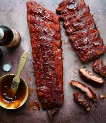

Pork Ribs Recipes

Description
"This is a multiple prize-winning master recipe.
It has several steps that can be used on pork spareribs, country-style ribs, or pretty much any other type of pork rib;
simply adjust oven time up for meatier cuts.
Use some soaked wood chips on the barbecue.
The smokier the grill, the better the ribs will taste!
Ingredients
- 6 pounds pork spareribs
- 1 ½ cups white sugar
- ¼ cup salt
- 2 ½ tablespoons ground black pepper
- 3 tablespoons sweet paprika
- 1 teaspoon cayenne pepper, or to taste
- 2 tablespoons garlic poweder
- 5 tablespoons pan drippings
- ½ cup chopped onion
- 4 cups ketchup
- 3 cups hot water
- 4 tablespoons brown sugar
- cayenne pepper to taste
- salt and pepper to taste
- 1 cup wood chips, soaked